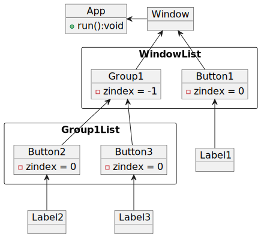
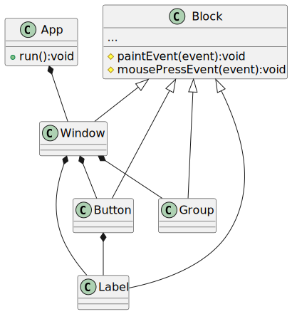
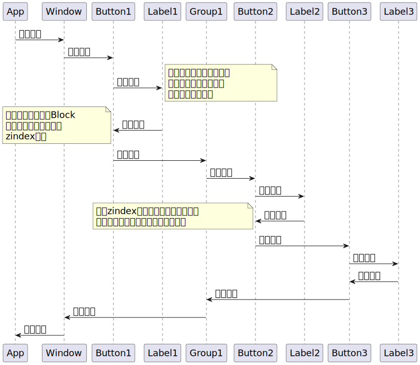

通过如下示例的程序结构说明事件处理函数的调用顺序
 Egrome事件循环内所触发的事件处理函数是根节点的事件处理函数，在上面的示例中，Window是Egrome对象树的根节点，该示例的函数调用顺序如下：
对于鼠标键盘事件来说，zindex的值越大，事件处理函数的调用顺序越靠前
对于屏幕绘制事件来说，zindex的值越大，事件处理函数的调用顺序越靠后
此差异产生的原因是，当多个具有同一父对象的子对象需要向屏幕绘制，如果希望它们具有正确的遮挡关系，就需要依赖zindex来确定绘制的顺序，同样的，如果想得到鼠标键盘事件正确的响应顺序，也需要依赖zindex来确定事件处理函数的调用顺序，但是对于屏幕来说，为了体现正确的遮挡关系，逻辑上层的元素就需要在下层元素之前绘制，但对于鼠标键盘操作说，逻辑下层的元素就需要在上层元素之后响应，因而造成了zindex的差异